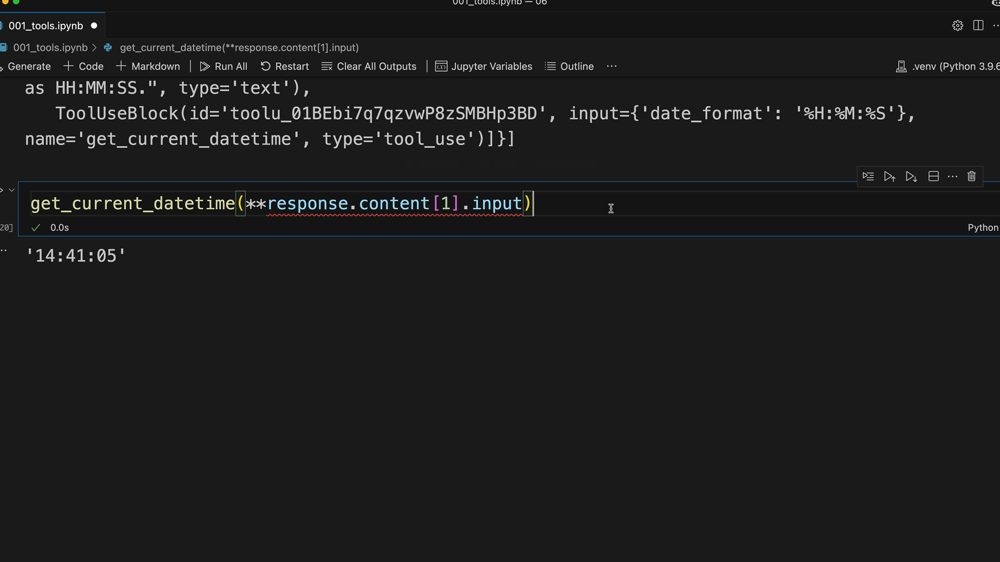
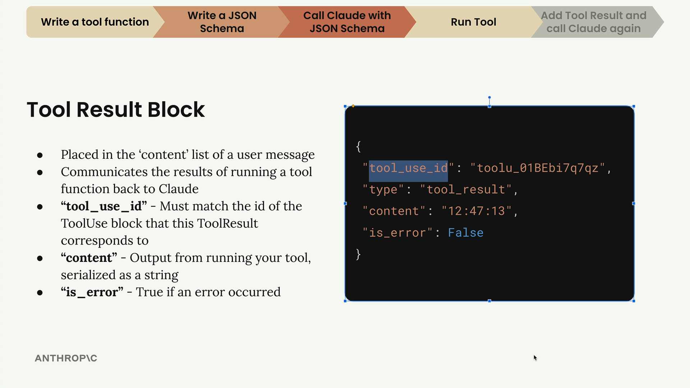
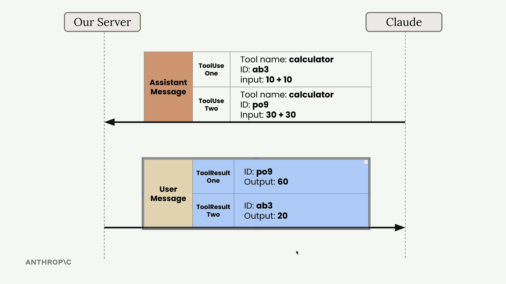
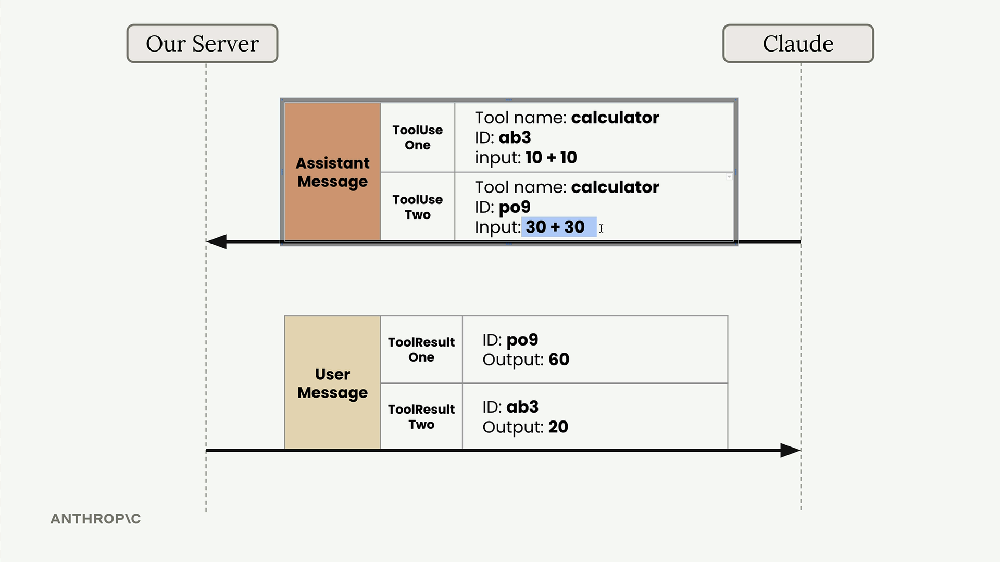
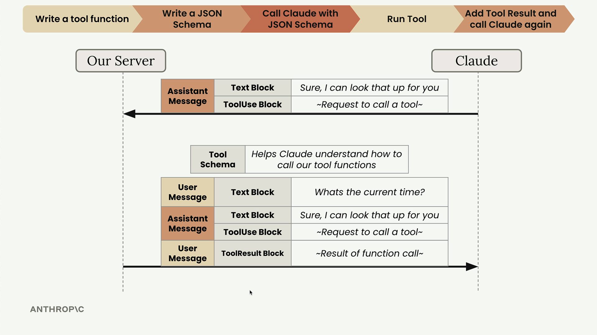

Отправка результатов
Чему научитесь
Видео 9:22 и текст урока
К концу урока вы сможете:
- выполнить функцию с аргументами из блока
tool_use; - собрать блок
tool_resultс правильнымtool_use_id; - сделать итоговый запрос и получить ответ с результатом инструмента.
Видео и текст урока.
Смотреть урок на Skilljar Sending tool results · 9:22Когда Claude запросил вызов инструмента, нужно выполнить функцию и отправить результат обратно. Это завершает цикл tool use: Claude получает запрошенную информацию.
Запускаем функцию-инструмент
Когда Claude отвечает блоком вызова инструмента, вы извлекаете входные параметры и вызываете свою функцию. Параметры инструмента лежат здесь:
response.content[1].input
Это словарь аргументов, которые Claude хочет передать функции. Функция ждёт именованные аргументы, а не словарь, поэтому используем распаковку Python:
get_current_datetime(**response.content[1].input)

Блок tool_result
Выполнив функцию, нужно отправить результат Claude в блоке результата инструмента (tool result). Этот блок кладётся в сообщение пользователя и сообщает Claude, что произошло при выполнении инструмента.

type: "tool_result", content: "12:47:13", is_error: False и совпадающий tool_use_id.Важные свойства блока результата:
tool_use_id— должен совпадать сidблока ToolUse, на который отвечает этот результат;content— вывод инструмента, сериализованный в строку;is_error—True, если произошла ошибка.
Несколько вызовов инструментов
Claude может запросить несколько вызовов в одном ответе. Например, на вопрос «What's 10 + 10 and what's 30 + 30?» Claude может ответить двумя отдельными блоками ToolUse.

ab3 (10 + 10) и po9 (30 + 30). Результаты приходят в другом порядке: сначала po9 = 60, потом ab3 = 20.У каждого вызова свой уникальный ID, и при отправке результатов нужно указывать эти ID. Так Claude знает, какой результат к какому запросу относится, даже если результаты пришли в другом порядке.

Собираем следующий запрос
Следующий запрос к Claude должен содержать всю историю разговора плюс новый результат инструмента. Структура такая:
messages.append({
"role": "user",
"content": [{
"type": "tool_result",
"tool_use_id": response.content[1].id,
"content": "15:04:22",
"is_error": False
}]
})
Теперь история сообщений содержит:
- исходное сообщение пользователя;
- сообщение ассистента с блоком вызова инструмента;
- сообщение пользователя с блоком результата.
Итоговый запрос
В следующем запросе нужно по-прежнему передавать схему инструмента, даже если вы не ждёте, что Claude снова его вызовет. Схема нужна Claude, чтобы понимать ссылки на инструмент в истории разговора.
client.messages.create(
model=model,
max_tokens=1000,
messages=messages,
tools=[get_current_datetime_schema]
)

Claude ответит итоговым сообщением, которое включает результаты инструмента в естественный ответ для пользователя. Цикл tool use завершён — вы дали Claude доступ к информации в реальном времени через свою функцию.
Дальше
Дальше — разговоры, в которых Claude вызывает несколько инструментов подряд, прежде чем ответить.
Оригинал урока: Sending tool results.